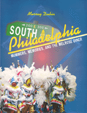

A guided tour of Philadelphia's quintessential neighborhood from the days of Thomas Jefferson to the night Palumbo's burned
A guided tour of Philadelphia's quintessential neighborhood from the days of Thomas Jefferson to the night Palumbo's burned


 A guided tour of Philadelphia's quintessential neighborhood from the days of Thomas Jefferson to the night Palumbo's burned
A guided tour of Philadelphia's quintessential neighborhood from the days of Thomas Jefferson to the night Palumbo's burned

|  |
South PhiladelphiaMummers, Memories, and the Melrose DinerMurray Dubincloth EAN: 978-1-56639-429-1 (ISBN: 1-56639-429-5) |
"If we could all observe our fellow men with Murray Dubin's talent and breadth of understanding, there would be Peace on Earth...and a hell of a lot more great books."
—Richard Ben Cramer, Pulitzer Prize Winner
From mayors and mummers to tap dancers and gamblers, South Philly has it all. This quintessential Philadelphia neighborhood boasts a complicated history of ethnic strife alongside community solidarity and, for good measure, some of the best bakeries in town. Among its many famous people South Philadelphia claims Marian Anderson, Frankie Avalon, Mayor Frank Rizzo, Temple Owl's coach John Chaney, Larry Fine of the Three Stooges, and "Loving" soap opera actress Lisa Peluso.
For South Philadelphians, whether they stay or leave, the neighborhood is always happy to give you their opinions, and in this book they talk about their favorite subject to Murray Dubin, award winning journalist at the Philadelphia Inquirer, who also called South Philly home.
Music and the arts are part of everyday life. Baritone Elliott Tessler says, "I'm not a celebrity, I'm a minor curiosity. If Pavarotti lived here, he would just be a minor curiosity, and probably because he was fat more than because he sang."
Jean DiElsi remembers finding work in 1943 as a cashier at a diner that would become a South Philly landmark. "It was the only diner around and it was open 24 hours. If you went to dances, everybody would go to the Melrose Diner afterwards...No, there was no Mel or Rose. it was named after a can of tomatoes.
In addition to being Philadelphia's first neighborhood, South Philly is the oldest ethnically and racially mixed big-city neighborhood in the nation. Catherine Williams remembers growing up black on Hoffman Street, "We had everything. We had the Jews, we had Italians, we had the blacks, we even had a Portuguese family. You never knew there was a color thing back then. I was the only black in my class at Southwark, but you never knew. In the third, fourth grade, some of those Italian boys was big, but you would have thought they were brothers to me."
These are some of the people and the opinions that make up South Philadelphia and Murray Dubin will take you on a resident's tour of the ultimate city neighborhood. But for every interview, there's also a lot of history. And Dubin provides an historical examination that spans 300 years, from Thomas Jefferson living in South Philadelphia in 1793 to the burning of Palumbo's in 1994. Whether you're a South Philadelphian yourself, or just want to understand the South Philly phenomenon this book is a must.
"Murray Dubin has managed to weave this neighborhood's 300-year history into a lush tapestry."
—The Philadelphia Lawyer
"[A] moving series of family histories told by people who grew up in South Philly and in many ways, never left. These folks are mostly Irish, Italian, Jewish and African-American because the community has always been a way station for immigrants from Europe and southern blacks seeking personal or economic freedom in the north."
—Main Line Times
Acknowledgments
Preface
Introduction
1. Irish
2. The Arts
3. Blacks
4. Politics
5. Italians
6. Sports
7. Jews
8. Crime and Violence
9. Not Irish or Black or Italian or Jew
10. One Family: Bennie Dubin's Story
Appendix: History by the Numbers
Sources
Bibliography
Index
Murray Dubin was born in South Philadelphia and is a reporter for the Philadelphia Inquirer.
General Interest
Philadelphia Region
© 2015 Temple University. All Rights Reserved. This page: http://www.temple.edu/tempress/titles/888_reg.html.